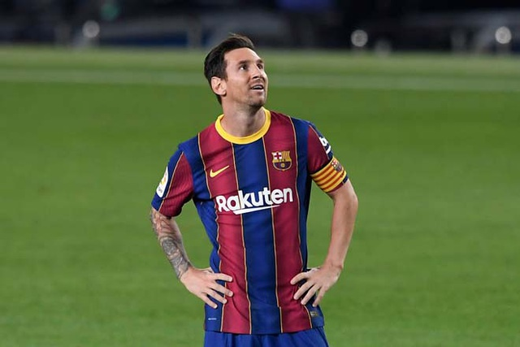
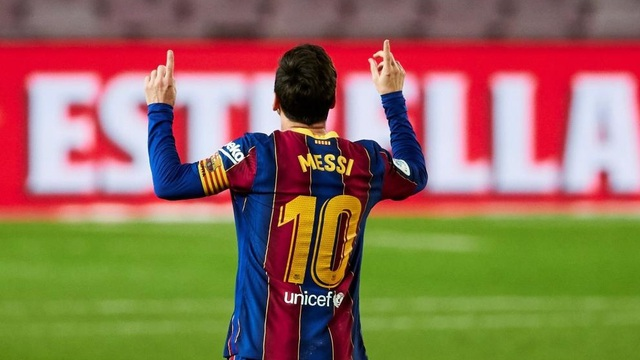

Dân trí Hợp đồng của Messi với Barcelona sẽ hết hạn vào cuối mùa giải này nhưng cầu thủ người Argentina vẫn chưa có động thái gia hạn hợp đồng.
Trong mùa Hè vừa qua, Messi đã gửi bản fax yêu cầu rời Barcelona. Mặc dù vậy, Ban lãnh đạo của đội bóng (đứng đầu là cựu Chủ tịch Bartomeu) đã nhất quyết ngăn cản. Điều đó khiến cho Messi phải nhượng bộ và chấp nhận ở lại.
Messi vẫn chưa vội cam kết tương lai với Barcelona
Nhưng điều đó không đồng nghĩa với việc Barcelona không thể mất Messi. Thậm chí, trong bối cảnh hợp đồng của Messi chỉ còn chưa đầy 1 năm, Los Blaugrana đang đối diện với nguy cơ mất trắng siêu sao người Argentina sau khi mùa giải này kết thúc.
Barcelona đương nhiên muốn gia hạn hợp đồng với Messi nhưng vấn đề ở chỗ đội trưởng của CLB lại chưa sẵn sàng. Theo nguồn tin từ tờ Marca, sở dĩ El Pulga vẫn dửng dưng bởi đang chờ động thái từ CLB.
Cụ thể, sau khi Chủ tịch Bartomeu từ chức, Messi đang chờ xem ai sẽ tân Chủ tịch của đội bóng. Bên cạnh đó còn là những kế hoạch phát triển đội bóng trong tương lai của vị sếp mới này.
Messi muốn biết kế hoạch của CLB trong vài năm tới, liên quan tới chính sách chuyển nhượng, người đảm nhiệm ghế Giám đốc thể thao hay kế hoạch với HLV trưởng. Theo kế hoạch, Barcelona sẽ tổ chức cuộc bầu cử Chủ tịch mới vào đầu năm sau. Lúc này, Chủ tịch ban kinh tế của CLB, Carles Tusquets đang tạm thời lãnh đạo đội bóng, trước cuộc bầu cử.
Messi có thể sẽ quyết định tương lai sau khi mùa giải này kết thúc
Bên cạnh đó, yếu tố thứ hai khiến Messi vẫn dửng dưng chính là việc chờ xem thành tích của đội bóng dưới thời HLV Ronald Koeman cũng như khả năng đóng góp của mình ở CLB.
Hiện tại, HLV Ronald Koeman đang xây dựng mối quan hệ tốt với Messi nhưng không ai biết trước điều gì trong tương lai. Hiện tại, Barcelona thi đấu thành công ở Champions League với 3 trận toàn thắng ở vòng bảng nhưng ở La Liga, tình hình không mấy khả quan khi CLB chỉ xếp thứ 8 trên bảng xếp hạng.
Do đó, nhiều khả năng, người hâm mộ Barcelona phải chờ tới cuối mùa mới biết được tương lai của Messi. Tờ Marca cũng cho hay, El Pulga sẽ tập trung đóng góp cho CLB và không chú ý tới những tin đồn gia nhập Man City. Mọi thứ chỉ được quyết định khi tương lai của anh ở Barcelona sáng tỏ.